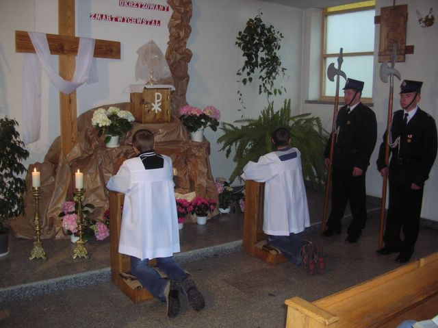

Uroczystości Wielkiej Soboty w kaplicy w Żarówce, 7 kwietnia 2007
Straż przy Grobie Pańskim (1)
Straż pełnią członkowie z Ochotniczej Straży Pożarnej w Żarowce: Andrzej Wilk i Bednarz.
Pierwszy / First |
Poprzedni / Previous |
Następny / Previous |
Ostatni / Last | Miniatury / Thumbnails
